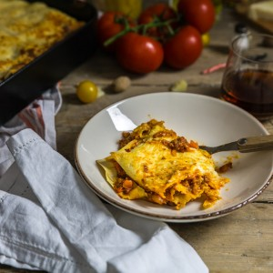

Lasagnes à la bolognaise

Aujourd’hui je vous retrouve avec une recette qui est un grand classique pour la plupart d’entre nous puisqu’il s’agit de la recette des lasagnes à la bolognaise (ça vous parle? 🙂 )
Vous l’aurez compris aujourd’hui je ne vais pas vous parler d’une folle découverte culinaire, ni d’une recette que j’ai pu manger ici ou là mais je vais vous parler d’une recette que je mange et que vous mangez je pense depuis que je/vous êtes tout petit! Bref j’ai envie de dire « enfin » je poste ma recette de lasagnes à la bolognaise, celle que mon chéri aime tant et qu’on a plaisir à déguster après une grosse journée (réconfort assuré)! Finalement cette recette de lasagnes a quand même sa petite histoire car au départ nous avions tous les deux chacun notre maman qui nous préparait leur propre recette à elles et c’était donc à notre tour d’avoir enfin la nôtre! Des essais il y en a eu des tonnes et il y en aura surement d’autres mais cette version elle nous plaît et c’est celle que l’on a validée ensemble! Le critère c’était de la chair à saucisse avec de la viande hachée! Car oui le mélange des deux c’est clairement ce qu’il faut pour faire de bonnes lasagnes mais il fallait trouver le bon équilibre entre les deux! Ensuite il y a eu le choix des pâtes! Des pâtes aux œufs de préférence et des pâtes faites maison c’est encore mieux (mais je travaille moi! (et des fois plus de 24h/jrs) alors des pâtes toutes prêtes des fois c’est bien aussi^^)!! Vous le verrez dans les ingrédients j’ai mis que l’on pouvait mettre un petit verre de vin rouge dans la sauce bolognaise mais c’est absolument facultatif et pour notre dernière version j’ai mis du Marsala et ma foi ce n’était pas mauvais du tout 🙂 alors à vous de voir si vous mettez du vin ou pas, du Marsala ou pas, c’est vos lasagnes maintenant alors à vous de vous de jouer!
Ingrédients
- Boeuf haché - 300g
- Chair à saucisse - 250g
- Oignon - 1
- Carotte - 1
- Coulis de tomates - 600ml
- Ail - 1gousse ou deux échalotes
- Parmesan - 100g
- Pâtes à lasagne industrielles ou maison - 12
- Huile d'olive
- Sel, poivre
- Feuilles de lauriers - 1-2
- Facultatif : vin rouge (ou Marsala) - le fond d'un petit verre
- Beurre doux - 70g
- Farine - 60g
- Lait - environ 650ml
- Noix de muscade
Instructions
- Émincer l'oignon, éplucher et couper la carotte en dés
- Dans une grande poêle verser un peu d'huile d'olive
- Faites-y revenir l'oignon, la gousse d'ail écrasée (ou échalotes émincées) et les dés de carotte
- Laisser cuire 5 minutes à feu moyen le temps de faire suer l'oignon
- Ajouter la chair à saucisse et incorporez-la aux autres ingrédients en remuant à l'aide d'une cuillère en bois
- Ajouter le bœuf haché et faites de même qu'avec la chair à saucisse
- Penser à bien remuer pour éviter que la viande ne forme de petites masses (si c'est le cas casser ces petites boules de viandes avec votre cuillère)
- Si vous voulez mettre du vin dans votre sauce bolognaise (comme je l'ai dit plus haut moi j'ai mis un fond de verre de Marsala), versez-le dans votre poêle et laissez-le s'évaporer
- Verser le coulis de tomates, saler et poivrer
- Ajouter les feuilles de laurier
- Laisser mijoter à feu très doux (il m'arrive de laisser mijoter 2h30 quand j'ai le temps mais vous pouvez laisser mijoter 30 minutes - 1h) Si vous avez l'impression que la sauce devient trop épaisse en cours de cuisson vous pouvez ajouter un peu d'eau (je préfère éviter mais ça peut dépanner si jamais le feu était trop fort etc..)
- Retirer les feuilles de laurier et laisser tiédir
- La sauce bolognaise obtenue ne doit pas être trop liquide ni trop compacte car elle va à nouveau cuire dans le four dans le plat à lasagne
- Faire fondre le beurre dans une casserole à fond épais
- Quand le beurre est fondu et commence à faire des petites bulles, ajouter la farine
- Bien mélanger à l'aide d'une cuillère en bois ou d'un petit fouet (2 minutes à peine). Il doit se former une "pâte" que l'on appelle le "roux"
- Verser le lait en plusieurs fois (moi je le verse en trois fois) tout en continuant de mélanger afin d’éviter que des grumeaux ne se forment.
- A l'aide du fouet vous sentirez quand votre béchamel est prête (il faut compter 6 à 8 minutes de cuisson sur feu moyen)
- La crème doit être épaisse mais pas trop non plus. Elle doit "napper" la cuillère.
- Saler, poivrer et ajouter 1 à 2 pincée de noix de muscade
- Préchauffer le four à 180°
- Dans votre plat à lasagne ( le mien fait 20*28cm ) alterner une fine couche de sauce bolognaise, une couche de pâtes à lasagne, une très fine couche de béchamel, une couche de sauce bolognaise, saupoudrer de parmesan, une couche de pâte à lasagne et recommencer. Entre les couches je n'utilise que 50g de parmesan environ.
- Je recouvre la dernière couche de la sauce béchamel restante et je saupoudre de 50g environ de parmesan
- Enfourner à 180° pendant 30 minutes
- A vous de jouer maintenant!!
Les tips de la communauté
Recette incontournable adoptée régulièrement par les familles avec succès reproductible. Consensus très positif sur le goût et la fiabilité. Meilleure le lendemain après un repos au frigo. Construction en couches bien expliquée.
Astuces
- Meilleure le lendemain après un repos au frigo pour une saveur optimale
- Utilisable avec modération de fromage cheddar râpé supplémentaire en couches
- Recette très fiable et reproductible régulièrement
Variantes suggérées
- Version végétarienne possible selon les retours des lecteurs
- Adaptable avec différents fromages (mozzarella, parmesan en dominante)